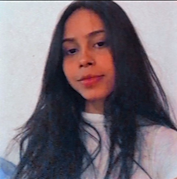

Olá Mundo ♡
Sejam bem vindos(a) ao meu Portfolio. 💜
Olá me chamo Karina Machado, sou moradora do Rio de Janeiro e faço parte do time de alunos
do projeto de Programadores Carioca. E aqui vocês irão descobrir um pouco sobre a minha
trajetória até aqui.
- Acredito na programação como uma ótima oportunidade de crescimento para aqueles que
visam no futuro a tecnologia.
Olá me chamo Karina Machado, sou moradora do Rio de Janeiro e faço parte do time de alunos
do projeto de Programadores Carioca. E aqui vocês irão descobrir um pouco sobre a minha
trajetória até aqui.
- Acredito na programação como uma ótima oportunidade de crescimento para aqueles que
visam no futuro a tecnologia.
